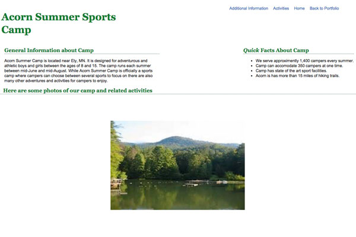

Projects
Occupational Issues in Minnesota
My Occupational Issues in Minnesota website was created for my Web Design Principals course at MCAD. The assignment was to design a project focusing on an issue impacting our community. The project included several steps including writing a project proposal, conducting research, creating wireframes and style tiles and finally implementing the design and development of the website. Initially HTML and CSS were used to display web design and development skills. Later on I added Responsive Design and Javascript to increase user accessibility.
Assignment Goals
- Choose an important issue effectiong our community
- Design a website to address this issue
- Display knowledge of our Web Design and Development skills
Technologies
- HTML
- CSS
- Responsive Design
- Javascript and Jquery
Camp Acorn
My Camp Acorn website is a fictional camp website that was initially created as part of my first web development course. The assignment was to create a three page website demonstrating our HTML and CSS skills. Additionally the assignment required the use of images, links and two-column grids. Initially HTML and CSS were used for the website to display my recently aquired knowledge. Later I added Javascript and Jquery as part of an assignment for my Javascript and Jquery class. I also recently added Responsive Design. These additional technologies allow for the user to interact with the website as well as for allowing more accessibility.
Assignment Goals
- Create a three page website on a topic of our choosing
- Display HTML and CSS skills learned in the Web Development course
- Javascript and Responsive Design were added later
Technologies
- HTML
- CSS
- Responsive Design
- Javascript and Jquery
- Git and Github
Como Park Friends

The Como Park Friends website was created as part of my Responsive Design course at MCAD. The goal of the assignment was to find a website on the web that we felt could use improvement. I chose the Como Park Zoo and Conservatory website. As part of the assignment I re-designed the website so it could be used effectively with three different screen sizes, desktop, tablet and mobile devices. As part of the assignment I used HTML, CSS, SASS and Responsive Design for this website. Additionally as a method of sharing our work and providing feedback more effectivly my classmates and I displayed our work on Github and provided a link so others could review and provide feedback for our work.
Assignment Goals
- Select a website online that we feel needs improvement
- Create a three page website using Responsive Design with design features and coding for three different screen sizes
- Include the improvements for the website that we feel are needed
- Demostrate the use of Responsive Design with the use of SASS
Technologies
- HTML
- CSS and SASS
- Responsive Design
- Git and Github
Exploring the Wilderness

The Exploring the Wilderness website was created as part of my Advanced Projects Studio course at MCAD. The assignment was to create a project to meet individual goals and program objectives. I decided to create a website with a wilderness travel theme. There were various steps in completing this project including proposal, research, wireframes, style tiles and finally coding. In the navigation menu there is a link titled Wilderness Process, this page describes the process of completing the project in more detail. The technologies for this website include HTML, CSS, Responsive Design and Github. Additionally, I added a few animations to increase usability..
Assignment Goals
- Design a project of our choosing that meets personal goals and program objectives.
- Write a proposal for the project including a management plan, schedule, goals and technologies to be used
- Created a website with a wilderness theme focusing on climate, wilderness travel and survival tips
- Covered several technologies learned throughout the IDM program
Technologies
- HTML
- CSS
- Responsive Design
- Git and Github